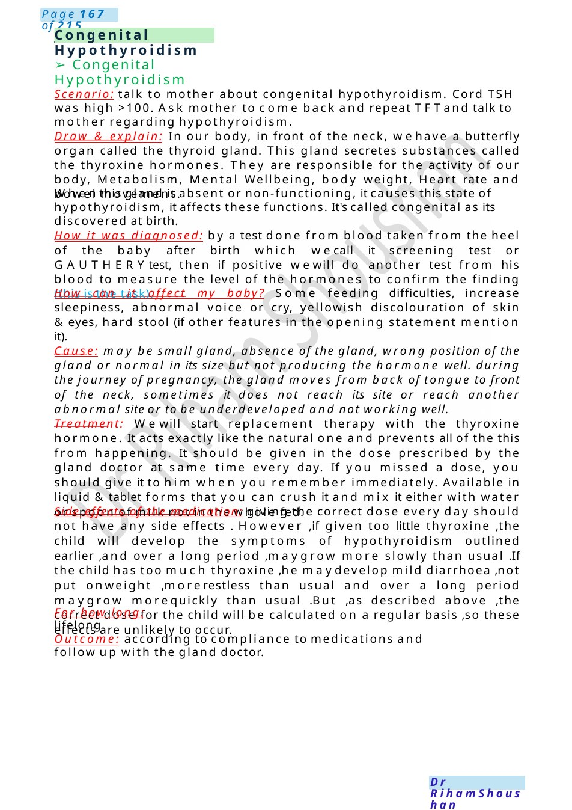

Thyroid Scenarios
Sick day rules : You will have a meeting with the gland doctor , he will teach you how to adjust the dose of steroids you are taking, because some times when you are going through stressful situations like exams, if you have common cold or even in time of your period, at this time you may need to adjust the dose and your gland doctor will teach you how to do it. ✓ If mild: double the dose of hydrocortisone for 24-48 h.
Scenario Summary
Sick day rules : You will have a meeting with the gland doctor , he will teach you how to adjust the dose of steroids you are taking, because some times when you are going through stressful situations like exams, if you have common cold or even in time of your period, at this time you may need to adjust the dose and your gland doctor will teach you how to do it. ✓ If mild: double the dose of hydrocortisone for 24-48 h.
Full Original Scenario

Thyroid Scenarios
Sick day rules : You will have a meeting with the gland doctor , he will teach you how to adjust the dose of steroids you are taking, because some times when you are going through stressful situations like exams, if you have common cold or even in time of your period, at this time you may need to adjust the dose and your gland doctor will teach you how to do it.
- If mild: double the dose of hydrocortisone for 24-48 h.
- If moderate: double the dose &if vomiting after 1 hour, start IMinjection then go to hospital. ✓ If severe illness or collapse: IVhydrocortisone &call ambulance.
Thyroid scenarios:
- Grave’s disease: breaking bad news
Explanation: (pointing to your neck), here is a gland called thyroid gland, this gland secretes chemical substance called thyroxine, it is very important as it regulates our HR,BPand the wayour body using of fuel to produce energy. wehave our defense system, it acts like a soldier defending our bodyagainst germs and bugs, in your condition instead of defending our body, it also attacks this gland results in secretion of more and more of this thyroxine.
Treatment: The best one whowill answer this question is the gland doctor, he will prescribe for you treatment for a period of time. and then he will follow you up for two years, then he will discuss with you other options.
Wehave a medicine called carbimazole to control the secretion of this hormone, also other options like propyl thiouracil and radioactive iodine, however these not given to all patients they have some patient selection or surgery. Also, we will have a meeting with heart doctor as this thyroxine may accelerate your heart, maymakeyour heart pumping very fast
Are my eyes will improve: the defense system attacks a certain tissue behind your eyes leading to accumulation of some tissue there, but sooner westart treatment, the good will be outcome.
Is not get affect my fertility? Hopefully, by the time when you will be sexually active, when you are in the childbearing period, by this time hopefully your gland under control and even though you will follow up with the gland doctor and labor doctor, they will adjust the medications and adjust everything for you
Advice about symptoms of thyrotoxic crisis: if you fell your heart is rising, your temperature is getting more and more high and you are becoming nervous, at this time you should seek medical advice, as this means there is excessive secretions of thyroxine in your body.
She must wear bracelet in case of crisis.
MDT:Consultant, Endocrinologist, Cardiologist, Ophthalmologist, Psychologist, Laise with school.

Congenital Hypothyroidism
- Congenital Hypothyroidism
Scenario: talk to mother about congenital hypothyroidism. Cord TSH was high >100. Ask mother to come back and repeat TFTand talk to mother regarding hypothyroidism.
Draw & explain: In our body, in front of the neck, wehave a butterfly organ called the thyroid gland. This gland secretes substances called the thyroxine hormones. They are responsible for the activity of our body, Metabolism, Mental Wellbeing, body weight, Heart rate and bowel movement.
Whenthis gland is absent or non-functioning, it causes this state of hypothyroidism, it affects these functions. It's called congenital as its discovered at birth.
How it was diagnosed: by a test done from blood taken from the heel of the baby after birth which wecall it screening test or GAUTHERYtest, then if positive wewill do another test from his blood to measure the level of the hormones to confirm the finding (this is the task).
How can it affect my baby? Some feeding difficulties, increase sleepiness, abnormal voice or cry, yellowish discolouration of skin &eyes, hard stool (if other features in the opening statement mention it).
Cause: may be small gland, absence of the gland, wrong position of the gland or normal in its size but not producing the hormone well. during the journey of pregnancy, the gland moves from back of tongue to front of the neck, sometimes it does not reach its site or reach another abnormal site or to be underdeveloped and not working well.
Treatment: Wewill start replacement therapy with the thyroxine hormone. It acts exactly like the natural one and prevents all of the this from happening. It should be given in the dose prescribed by the gland doctor at same time every day. If you missed a dose, you should give it to him when you remember immediately. Available in liquid &tablet forms that you can crush it and mix it either with water or spoon of milk not in the whole fed.
Side effects of the medication: giving the correct dose every day should not have any side effects . However ,if given too little thyroxine ,the child will develop the symptoms of hypothyroidism outlined earlier ,and over a long period ,maygrow more slowly than usual .If the child has too much thyroxine ,he maydevelop mild diarrhoea ,not put onweight ,morerestless than usual and over a long period maygrow morequickly than usual .But ,as described above ,the correct dose for the child will be calculated on a regular basis ,so these effects are unlikely to occur.
For how long: lifelong.